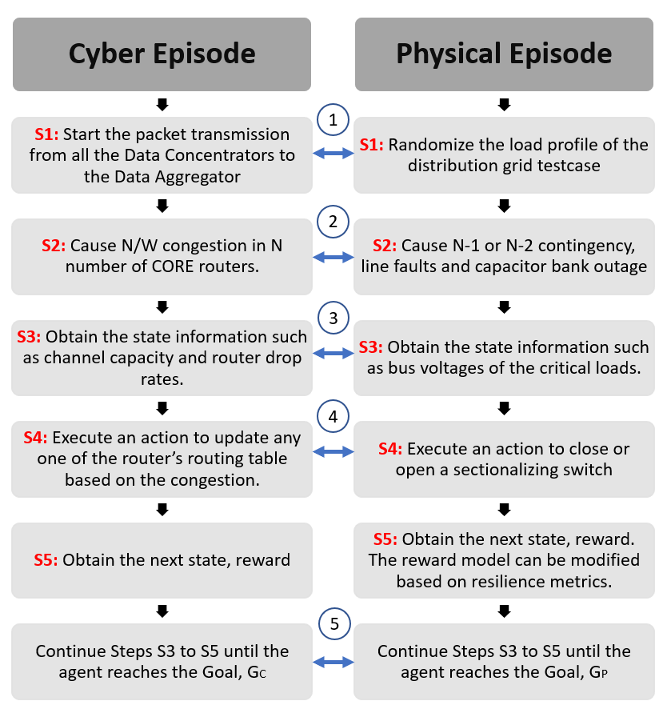

SimPyDSS RL Env Test¶
{kind=link}
Steps in an episode created in the cyber-physical RL Environment. The interconnection in blue indicates the communication between the Simpy and Open DSS simulators. 1 indicates the passage of physical-side information to cyber network for determining the packet size. 2 indicates the passage of cyber and physical contingency to each others environment. Currently a physical fault adds an event in cyber emulator to generate a fault information to send to the aggregator. 3 indicates the merge of the cyber and physical state information to feed to the RL algorithm or the Agent. 4 Based on the policy, implement the action by segregating respective action of routing policy and control of sectionalizing switch. 5 Evaluating the goal $G_P$ and $G_C$ for terminating the episode when both goals are reached.
Classes and Functions¶
Created on Fri July 31 09:17:05 2022
@author: abhijeetsahu
This environment would merge both Simpy and OpenDSS environment.. Current implementation is a dummy merge..Still need to update
- class CPEnv_DiscreteDSS_RtrDropRate.CyberPhysicalEnvDummy(cenv, penv, compzones)¶
Bases:
objectCyberPhysical combined RL environment with sequential interaction with each environment
- reset()¶
- step(actions)¶
- class CPEnv_DiscreteDSS_RtrDropRate.CyberPhysicalEnvMT(cenv, penv, comp_zones)¶
Bases:
gym.core.EnvCyberPhysical combined RL environment with Multi-Threads
- reset()¶
Resets the environment to an initial state and returns an initial observation.
Note that this function should not reset the environment’s random number generator(s); random variables in the environment’s state should be sampled independently between multiple calls to reset(). In other words, each call of reset() should yield an environment suitable for a new episode, independent of previous episodes.
- Returns:
observation (object): the initial observation.
- step(actions)¶
Run one timestep of the environment’s dynamics. When end of episode is reached, you are responsible for calling reset() to reset this environment’s state.
Accepts an action and returns a tuple (observation, reward, done, info).
- Args:
action (object): an action provided by the agent
- Returns:
observation (object): agent’s observation of the current environment reward (float) : amount of reward returned after previous action done (bool): whether the episode has ended, in which case further step() calls will return undefined results info (dict): contains auxiliary diagnostic information (helpful for debugging, and sometimes learning)
- CPEnv_DiscreteDSS_RtrDropRate.CyberPhysicalMapping()¶